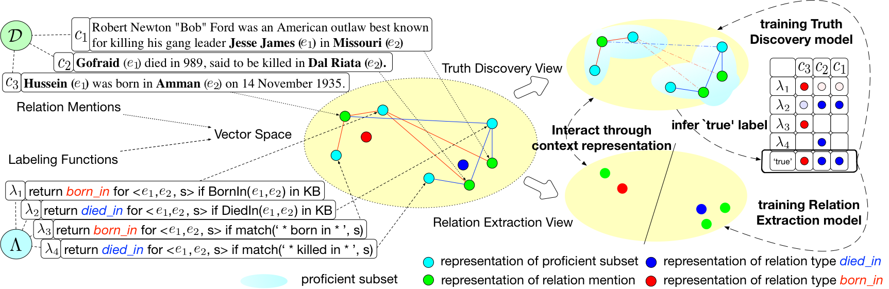

Relation Extraction
Sentence-level Relation Extraction: classify a relation mention into a set of relation types of interest or Not-Target-Type (None)
- Relation Mention
-
an entity pair with a sentence / context.
E.g., ("Hussein", "Amman'', Hussein was born in Amman on 14 November 1935.) - Relation Types of Interest
-
A set of relation types.
E.g., {Born-in, President-of, Died-in, Parents-of, ...} - Relation Extraction
- predict Born-in for ("Hussein", "Amman'', Hussein was born in Amman on 14 November 1935.)
Distant Supervision
Automatically generate annotations by Knowledge Base (KB).
return r for (e1, e2, s) if r(e1, e2) in KB
For example, because Born-in(Obama, USA) and President-of(Obama, USA) and Citizen-of(Obama, USA) exists in KB, ("Obama", "USA", Obama was born in Honolulu, Hawaii, USA as he has always said) would be annotated as Born-in (correct) and President-of (wrong).
Heterogeneous Supervision
Distant supervision only encodes KB, while we have more than KB.
-
Knowledge Base:
-
return Born_in for (e1, e2, s) if Born_in(e1, e2) in KB -
return Died_in for (e1, e2, s) if Died_in(e1, e2) in KB
-
-
Heuristic Patterns:
-
return Born_in for (e1, e2, s) if match('* born in *', s) -
return Died_in for (e1, e2, s) if match('* died in *', s)
-
Heterogeneous Supervision encodes heterogeneous supervision by means of labeling functions.
Challenges
- Original Relation Extraction Task
- True Label Discovery: Resolves conflicts among Heterogeneous Supervision
Our Solution
Intuition
-
Relation Extraction: Matching appropriate relation type to context.
- ("Obama", "USA", Obama was born in Honolulu, Hawaii, USA as he has always said) should not be categorized as President-of, since the context does not match.
-
True Label Discovery: Finding most reliable annotation w.r.t. context.
- A labeling function could be more reliable for a subset of instances comparing to the rest.
Since Context plays an important role in both tasks, we employed Representation Learning to capture context information, and bridges these two tasks.
A Representation Learning Approach
Experiments
Labeling Function
- Knowledge Base: directly adopting annotations of Distant Supervision.
- Heuristic Patterns: human constructed by analysis of Annotations generated by KB
True Label Discovery
In Table 1, the first two relation mentions come from Wiki-KBP, and their annotations are {born-in, None}. The last two are created by replacing key words of the first two. Key words are marked as bold and entity mentions are marked as Italics.
| Relation Mention | REHESSION | Investment \ Universal Schemas |
|---|---|---|
| Ann Demeulemeester ( born 1959 , Waregem , Belgium ) is ... | Born-in | None |
| Raila Odinga was born at ..., in Maseno, Kisumu District, ... | Born-in | None |
| Ann Demeulemeester ( elected 1959 , Waregem , Belgium ) is ... | None | None |
| Raila Odinga was examined at ..., in Maseno, Kisumu District, ... | None | None |
Investment and Universal Schemas refer None as true type for all four instances in Table 1. And our method infers born-in as the true label for the first two relation mentions. After replacing the matched contexts (born) with other words (elected and examined), our method no longer trusts born-in since the modified contexts are no longer matched, then infers None as the true label. In other words, our proposed method infer the true label in a context aware manner.
Relation Extraction
Here, we summarize performance comparison with several relation extraction systems over KBP 2013 dataset (sentence-level extraction) in Table. 2.| Method | Precision | Recall | F1 |
|---|---|---|---|
| DSL (Mintz et al., 2009) | 0.3301 | 0.5446 | 0.4067 |
| MultiR (Hoffmann et al., 2011) | 0.3045 | 0.5277 | 0.3810 |
| FCM (Gormley et al., 2015) | 0.2523 | 0.5258 | 0.3410 |
| CoType-RM (Ren et al., 2017) | 0.3701 | 0.4767 | 0.4122 |
| ReHession (Our) | 0.3677 | 0.4933 | 0.4208 |
Resources
Softwares and labeling functions have been uploaded to Github
Reference
Please cite the following paper if you find the codes and datasets useful:
@inproceedings{Liu2017rehession,
title={Heterogeneous Supervision for Relation Extraction: A Representation Learning Approach},
author={Liu, Liyuan and Ren, Xiang and Zhu, Qi and Zhi, Shi and Gui, Huan and Ji, Heng and Han, Jiawei},
booktitle={Proc. EMNLP},
year={2017}
}